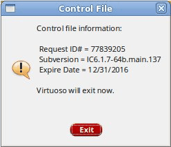
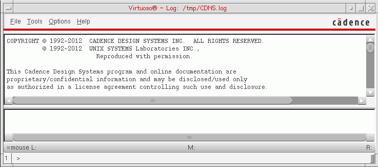
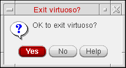
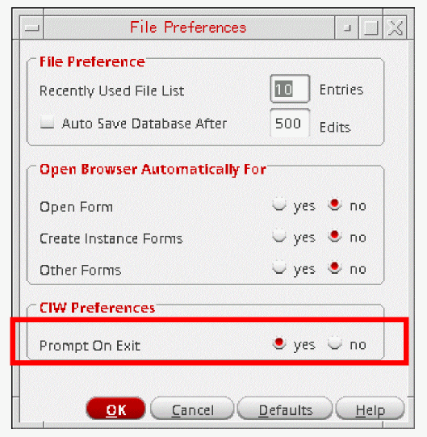
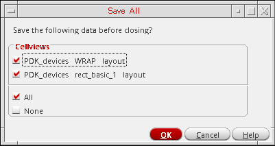

2
Getting Started with Virtuoso Software
Before getting started with Virtuoso software, you should read Chapter 1, “Introducing the Virtuoso Design Environment,” which provides links to topics that can assist you in working in the Virtuoso Design Environment.
In this chapter, you can read about the following topics:
- Starting Cadence Software
- Saving Changes
- Saving Changes
- Saving and Renaming Log Files
- Quitting the Cadence Software
- Backing Up Your Work
- Unlocking an Application
See also “Getting Help”.
Starting Cadence Software
To start Cadence software from a UNIX prompt, do the following:
-
Change to the directory where you start the Cadence software:
cd yourDirectory
In Cadence software, this directory becomes your current directory. - Set environment variables as necessary (see Setting UNIX Environment Variables in the Cadence Library Manager User Guide for more information).
- Type the command to start the Cadence software. (You can ask your system administrator for the correct command.)
When Cadence software starts, it reads the .cdsinit file to set up your Cadence environment. Then the software searches the following three locations in the order listed and uses the first .cdsinit file it finds:
-
your_install_dir
/tools/dfII/local -
The directory from which you started the Cadence software (
.) -
Your home directory (
~)
The software reads no further unless this .cdsinit file instructs the software otherwise.
You can customize your work environment by editing system and application
Command-Line Options
You can use the following command-line options when starting any Cadence application:
|
Provides enhanced drawing of 45-degree diagonal lines. With this option, diagonal lines are not jagged. |
|
|
Specifies the log file (fileName) to record this session.
For example, use the following command to save the log file of the |
|
|
Adds an absolute timestamp for every entry in the log file. By default, the absolute time is logged in UTC (Coordinated Universal Time or GMT) to allow timestamps that can be compared between timezones. The first two lines of the log file display the start time in UTC as well as local time.
Time can be logged as the local time rather than UTC by setting the environment variable
This environment variable also controls whether other timestamps in the
Timestamp logging can also be enabled by setting the environment variable
Timestamps are output to the nearest millisecond, but the resolution of the timestamps is determined by the hardware on the system on which the application is run. Log files with timestamps can be replayed but the timestamps are ignored during replay. Log files with timestamps are not replayable in the older releases that did not have the timestamp feature. |
|
|
2008.01.30 21:02:07.357\i load "allFields.il" 2008.01.30 21:02:12.060\i ipcSleep(5) 2008.01.30 21:02:22.523\i hiDisplayForm phzForm2D 2008.01.30 21:02:26.110\o "Mapping form: phzForm2D" 2008.01.30 21:02:28.899\i ipcSleep(5) |
|
|
Adds a timestamp relative to the previous log entry in the log file. This allows you to see the amount of time that elapsed between entries. Also, the first two lines of the log file display the start time in UTC (Universal Time or GMT) as well as local time. Timestamps are output to the nearest millisecond, but the resolution of the timestamps is determined by the hardware on the system on which the application is run. Log files with timestamps can be replayed but the timestamps are ignored during replay. Log files with timestamps are not replayable in older releases that did not have the timestamp feature. 00:00:00.030\i load "allFields.il" 00:00:00.003\i hiDisplayForm phzForm2D |
|
|
Specifies the maximum number of CPU-bound tasks that can be executed simultaneously. The default value for
The A task is not 100% CPU-bound if it takes less that 1 CPU core load. |
|
|
Specifies the maximum number of threads that can be created in a Virtuoso session. The default value for
If the number of threads in a session exceeds the |
|
|
Disables blinking. When blinking is disabled, objects that would normally blink in graphics windows will not blink.
You can also use the SKILL function |
|
|
Specifies non-graphics mode, which you can use for SKILL programming and replaying log files. In this mode, Unix Domain Socket (UDS) is used to connect to the nograph server. The TCP port is not opened.
This mode uses the Cadence-provided VNC server, Use this option carefully as it is intended primarily only for replaying log files (which were generated in graphics mode) for testing purposes.
when starting in See also: Using XVNC. |
|
|
Emulates the non-graphical mode using an X server other than You can also start the non-graphical emulation mode by setting the following environment variable:
and using either the
If you use both |
|
|
Starts the non-graphical mode using the display specified by the argument N, where N can be a number 0 through 9 or "+". The
Do not use the |
|
|
Overrides the setting made by the environment variable |
|
|
Prevents use of X Shared Memory Access (XSHM), which is a protocol used for communicating with the X display server to enable better performance. This mode can only be used if the X server is running on the same machine as the Virtuoso software. |
|
|
Restores a saved session from fileName.
This option cannot read a log file because it uses the SKILL function load to load the file toward the end of the initialization process.
|
|
|
Displays the control file content. All Virtuoso early access releases have a limited lifespan to ensure that customers do not use these short-term releases forever. Therefore, a control file is given to the customers that contains an expiration date and the sub-version value of the release.

To view the control file content, you need to run the following command: |
|
|
Returns the release number, such as 4.4, without starting the Cadence software. |
|
|
Returns the version number without starting the Cadence software. To identify the exact software version number, type a command similar to the following in a terminal window. |
See the user guide for your application for other options that are specific to that application.
-
For detailed information about your visuals, type
xdpyinfoat the system prompt. -
For root visual information, type
xdpyinfo | grep rootat the system prompt.
The following section describes using XVNC, which is a Unix VNC server based on a standard X server, to work on Virtuoso.
Using XVNC
For Virtuoso, XVNC is controlled through the following environment variables and command line options:
The environment variables are:
-
CDS_XVNC_OFFSET(which can be a number from 0-9) -
CDS_XVNC_TENBASE(which can be a number from 1-9 or "+")
-
-nographN(whereNcan be any digit from 0-9) -
-vncTenbase N(whereNcan be any digit from 1-9 or "+")
If -nographN is specified, it overridesthe CDS_XVNC_OFFSET settings. If -vncTenbase N is specified, it overridesthe CDS_XVNC_TENBASE settings.
CDS_XVNC_OFFSET are the recommended settings, however, if it is not defined, the CDS_XNDX_OFFSET settings work.
By default, non-graphical mode (-nograph) is opened using the non-visible display :95. If display :95 fails, checks are performed to see if a lock file for this display exists.
If the lock file exists, after waiting for few seconds an attempt to open display :95 is made again. If this attempt also fails, a message indicating that the lock file should be removed is displayed (if no Xserver is running for that display) and an attempt to connect with the next display (:90 through :99 or from :99 to :90 if starting at a display other than :90) is made.
If no lock file exists, Virtuoso will use the cdsVncserver script to start the nograph server cdsXvnc for display :95. An attempt to connect to display :95 is made every 3 seconds until either the connection is made to this display, or 10 attempts are made (this typically takes about a minute, since the connection attempt itself can take a few seconds). If the connection fails in all of the ten tries, a failure message is displayed and an attempt to connect with the next display is made. This process is repeated until either a connection is made, or it has failed for all the displays :90 through :99.
-
CDS_XVNC_OFFSET, or-nographN, will change the first display it tries to the one with the lowest digit taken from the environment variable or the option. So, for example, if the offset is set to3, then the attempt to open display:93is made first, then:94, and so on. When it reaches:99, if that fails, an attempt to open display:90is made, and the last one is:92. Therefore, attempts are made to always try up to 10 displays, with the same first digit and starting with the second digit as 0 or that specified by the offset option. -
CDS_VNC_TENBASE, or -vncTenbase N, will change the first digit of the display. It is,however, limited to 1-9. For example, if-vncTenbaseis set to 5, then the displays used are:50through:59, starting at:55, unless the offset is specified (in which case it starts at:5N, whereNis the offset). Then it works like the default range of:90through:99, except in this case it will be:50through:59.
VNC is used interactively, and a specific display is not specified, VNC by default starts with display :0, and then sequentially adds 1 until it finds an available slot. Normally, a VNC session will not be shared among multiple users. However, the cdsXvnc sessions are configured to allow sharing. So, multiple nograph users will share the same session, and multiple nograph sessions running on the same machine that use the same display number will share the same cdsXvnc server (assuming the number of sessions on that cdsXvnc server has not maxed out).
In fact, because multiple nograph sessions share the same cdsXvnc server, it is important not to kill a running cdsXvnc process. cdsXvnc exits automatically after all programs connecting to it have disconnected. Killing a running cdsXvnc process will likely cause one or more Virtuoso sessions to fail and display an error.
Getting Started Examples
Before you start Virtuoso, do the following:
- Obtain the required licenses and software. See, Virtuoso Software Licensing and Configuration Guide.
-
Set up Cadence tools’ executable binary paths for Virtuoso and other tools, such as MMSIM simulators. You may add these paths into your
.cshrcfile. -
If required, customize your virtuoso with the Virtuoso initialization file (
.cdsinit) and the environment variable file (.cdsenv). See Specifying Environment Settings.
.cdsenv and .cdsinit is read by Virtuoso in a designated order. For more information, see Specifying Environment Settings.- To start Virtuoso from a UNIX prompt, do the following:
- Now, you can create and access your design project cellviews. If required, you can also set up the design data version control and management using either Cadence’s Generic Design Management (GDM) (see the Overview section of the Cadence Application Infrastructure User Guide), or any other third party DM tool.
Examples of starting a Cadence workbench follow:
-
To start Virtuoso as a background process, type the following command:
virtuoso &
The CIW appears.
 -
To start Virtuoso as a background process, with outputs being sent to a log file, type the following command:
In this case, outputs sent to the terminal are also written to the log file, which can be accessed later, even if Virtuoso exits unexpectedly.virtuoso -log 1.log &
Alternatively, you can use the following options in Linux:-
Before closing the terminal, press
Ctrl+Zto interrupt the process and use thebgcommand to put the process in the background. -
Launch Virtuoso using the
screencommand as follows:
/usr/bin/screen virtuoso -log myLog
In this case, even when the terminal runningscreenis closed, Virtuoso continues to run.
-
Before closing the terminal, press
-
To start Cadence software in a non-graphics mode, type the following command:
virtuoso -nograph
The CIW does not appear. The Design Environment prompt (>) appears.
Do not use an ampersand (&) after the command in nongraphics mode because you want to interact with the software rather than run the software in the background.
-
To execute a SKILL file automatically on starting, type the following command:
virtuoso -nograph -replay fileName
where fileName is the name of the SKILL file you want to execute.
Saving Changes
You can save changes to design work, session defaults, window and forms position and size:
To save design work, do the following:
To save changes to session defaults, do the following:
-
From the CIW, choose Options – Save Defaults.
The Save Defaults form appears.
See Specifying New Default Values for more information.
To save the current position of windows and forms, do the following:
-
From the CIW, choose Options – Save Session.
The Save Session form appears.
See Saving Window Positions for more information. See also Chapter 9, “Getting Started with Workspaces” for information about saving positions of docked and floating assistant panes in your session window.For ideas about how to preserve your session log file, see Saving and Renaming Log Files.
Saving and Renaming Log Files
The software writes a record of each session in the CDS.log file (unless you specify a different log file name using the -log option on the command line when you start your session). You can manage your session log files using any of the following methods.
-
After you complete a session, you can rename the log file using the UNIX
mvcommand. For example:mv CDS.log log.jun1
-
When you start your session, you can use the
-logoption to specify a name for the log file. For example:
where startupCmd is the command you type to start your session (such asstartupCmd-log ~/log.jun1 &virtuoso). -
Before you start your session, you can set the
CDS_LOG_VERSIONenvironment variable to specify a unique name every time the software writes a log file (see Specifying the CDS.log File Name” in the Cadence Library Manager User Guide).
Quitting the Cadence Software
You can exit the Cadence software by typing a command or selecting a menu item. The Design Environment prompt is available in both graphics and nongraphics modes. In graphics mode, a command prompt is available on the input line of the CIW (see also “Working with SKILL Commands”).
To quit the Cadence software from the Design Environment prompt, do the following:
To quit Cadence software from a menu, do the following:
-
From the CIW, choose File – Exit.
An Exit prompt appears.
If you do not want an Exit prompt to appear every time you exit the Design Environment, you can select no for the Prompt On Exit option in the CIW Preferences group box on the File Preferences form (see “Specifying When the Exit Prompt Appears”).You can also specify this preference by saving the following line in your.cdsenvfile:ddserv.ciw promptOnExit boolean nil
-
Click Yes.
If you have made no changes since the last save, the software exits.
If you have unsaved data in any open session window, the Save Cellviews form appears.
A mark appears in the check box indicating those unsaved cellviews that the program will save when you click OK.
- (Optional) Remove the mark from the check box for each cellview whose changes you do not want to save, or click None to deselect all cellviews and save none of your changes.
-
Click OK.
The specified changes are saved and the application exits.If you click Cancel, you cancel both save and exit operations. The program does not save your changes and does not exit.If you attempt to exit Virtuoso when there are more than 1632 modified cellviews, constraints, techfiles, and so on, active in your session, you will be prompted by the Save All form to choose to save All or None of these views and files; without the list of modified data being displayed as it exceeds displayable limits.
Backing Up Your Work
To back up your work, do the following:
-
Change to the directory you want to back up. For example:
cd /usr/mnt/designs
-
Use the
tarcommand to back up your work either to a tape drive or to another directory as follows:
We recommend that you back up your work regularly.
Unlocking an Application
The use of locks in a multi-user environment is an essential behavior as we do not want multiple edits taking place at the same time. The.cdslck file is therefore vitally important for ensuring this.
However, in certain circumstances, such as a crash, you may be required to remove an application lock.
The best method of doing this is to use the clsAdminTool, for example:
-
At a command line enter:
% clsAdminTool -
At the prompt enter either:
> -are .(to remove all locks from the current directory)
or
> -are <directoryLocation> (to remove all locks from the specified location)
You will then be provided with a list of the locks that have been removed, for example:
BEGIN: Release Edit Locks.
/user/jsmith/CDS.log lrd880a 13660 1173285728
/user/jsmith/aspec/run/techManager.log kudos 10225 991131648
Return to top